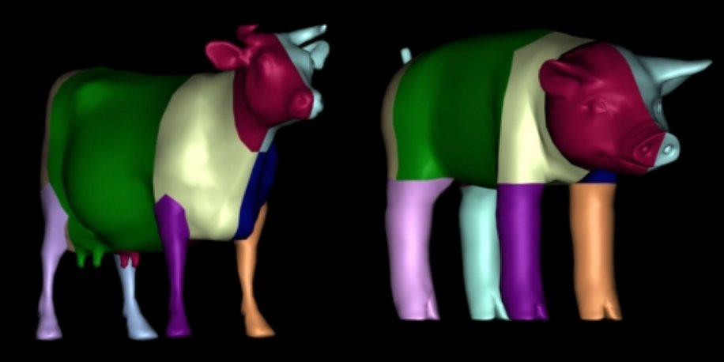
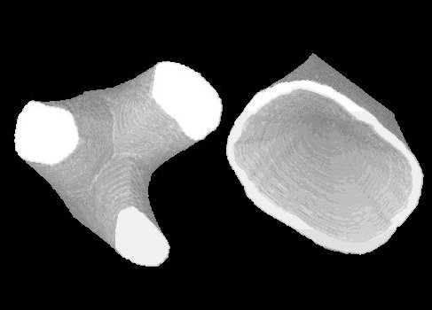
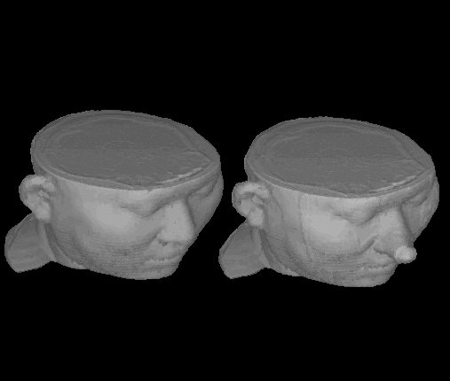
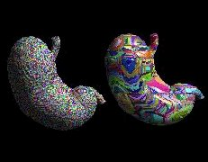
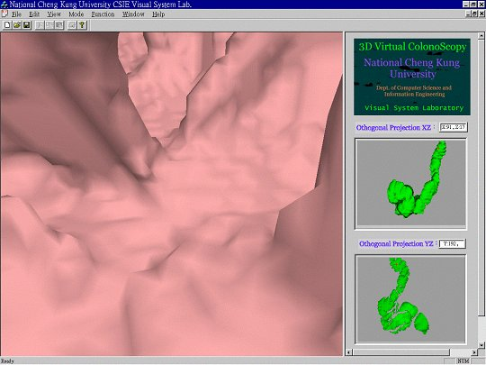

| 林昭宏
(Chao-Hung Lin)
Ph. D student, Computer Graphics Group at Visual System Laboratory (CGVSL), Department of Computer Science and Information Engineering, National Cheng-Kung University. Phone: 06-2757575 ext62530-49 E-mail: jendon@csie.ncku.edu.tw |
| Publications | |
Journal
Paper
1.
(2004/01)
Chao-Hung Lin, Tong-Yee Lee, ” Metamorphosis of 3D
Polyhedral Models Using Progressive Connectivity Transformations”,
Accepted to IEEE Transactions
on Visualization and Computer Graphics, Jan. 2004. 2.
(2002/12) Tong-Yee
Lee, Chao-Hung Lin, “Feature-guided Shape-based Image
Interpolation”, IEEE Transactions on Medical Imaging,
Vol. 21, No. 12, pp. 1479-1489, Dec. 2002. 3.
(2001/12) Tong-Yee
Lee, Chao-Hung Lin, Han-Ying Lin, "Computer-aided Prototype
System for Nose Surgery (Rhinoplasty)," IEEE Transactions on
Information Technology in Biomedicine, Vol. 5, pp. 271-278, 2001. 4.
(2001/09) Tong-Yee
Lee, Chao-Hung Lin, "Growing-cube Iso-surface
Extraction Algorithm For Medical Volume Data," Computerized
Medical Imaging and Graphics. Vol.25, pp. 405-415, 2001. 5.
(1999/06)
Tong-Yee Lee, Ping-Hsien Lin, Chao-Hung Lin, Yung-Nein Sun, Xi-Zhang
Lin, "Interactive 3D Virtual Colonoscopy System," IEEE
Transactions on Information Technology in Biomedicine, Vol. 3, No.02,
pp. 139-150, 1999.
Conference Paper1.
(2000/11)
Tong-Yee Lee ,Chao-Hung Lin, " Interactive Animation of
4D Medical Imaging," Proceedings of 2000 IEEE EMBS International
Conference on Information Technology Applications in Biomedicine, pp.
232-237, Nov. 9-10, WAsh. DC, USA, 2000. 2.
(1999/08)
Tong-Yee Lee ,Chao-Hung Lin, "Growing-cubes Isosurface
Extraction Algorithm," Workshop on Distributed System Technologies
& Applications,1999. 3.
(1998/12)
Tong-Yee Lee, Ping-Hsien Lin, Chao-Hung Lin, Yung-Nein Sun, Xi-Zang
Lin, "Interactive 3D Virtual Colonoscopy System," ,International
Computer Symposium (ICS'98), Taipei, Dec. 1998. 4.
(1998/11)
Tong-Yee Lee, Chao-Hung Lin, Ping-Hsien Lin, Yung-Nein Sun,
"Interactive Walkthrough of Large Colonic Database," ,Computer
Graphics Workshop (Joint workshop of ACM Symposium of VRST'98),
Taipei, pp. 90-93, 1998. |
|
|
Research |
|
|
 |
Metamorphosis of 3D Polyhedral Models Using Progressive Connectivity
Transformations
Three-dimensional metamorphosis is a powerful technique to produce a 3D shape transformation between two or more existing models. In this paper, we propose a novel 3D morphing technique that avoids creating a merged embedding that contains the faces, edges and vertices of two given embeddings. This novel 3D morphing technique dynamically adds or removes vertices to gradually transform the connectivity of 3D polyhedrons from a source model into a target model and simultaneously creates the intermediate shapes...... |
|  |
Feature-guided
Shape-based Image Interpolation
IA feature-guided image interpolation scheme is presented. It is an effective and improved, shape-based interpolation method used for interpolating image slices in medical applications. The proposed method integrates feature line-segments to guide the shape-based method for better shape interpolation. An automatic method for finding these line segments is given........ |
|
|
|
|  |
Computer-aided Prototype System for Nose
Surgery
Rhinoplasty, or surgery to reshape the nose, is one of the most common of all plastic surgery procedures. Phinoplasty can enhance patient's appearance and self-confidence, and may also correct a birth defect of injury, or help relieve some breathing problem. In this paper, we present a 3D surgical simulation system, which can assist surgeons in planning rhinoplasty procedures. This system employs computer graphics and image processing techniques for the simulation of a rhinoplasty...... |
|  |
Growing-cube Isosurface Extraction Algorithm For Medical Volume In medical applications, three-dimensional volume data such as CT and MRI are gathered from medical-imaging devices. Marching cube (MC) algorithm is a common routine to extract isosurfaces from volume data. The MC algorithm generates the massive number of triangles to represent an isosurface. It is difficult to render this amount of triangles in real-time on general workstations. In this paper, we present a growing-cube algorithm to reduce the number of triangles generated by the MC algorithm......... |
|  |
Interactive 3D Virtual Colonoscopy System We describe a low-cost 3-D virtual colonoscopy system that is a non-invasive technique to examine the entire colon, and can assist the physicians in detecting polyps inside the colon. Using the helical CT data and proposed techniques, we can 3D reconstruct and visualize the inner surface of the colon. We generate high resolution of video views of the colon interior structures as if the viewer’s eyes were inside the colon. The physicians can virtually navigate inside the colon in two different modes: interactive and automatic navigation, respectively...... |
Rotation.gif){kind=link}